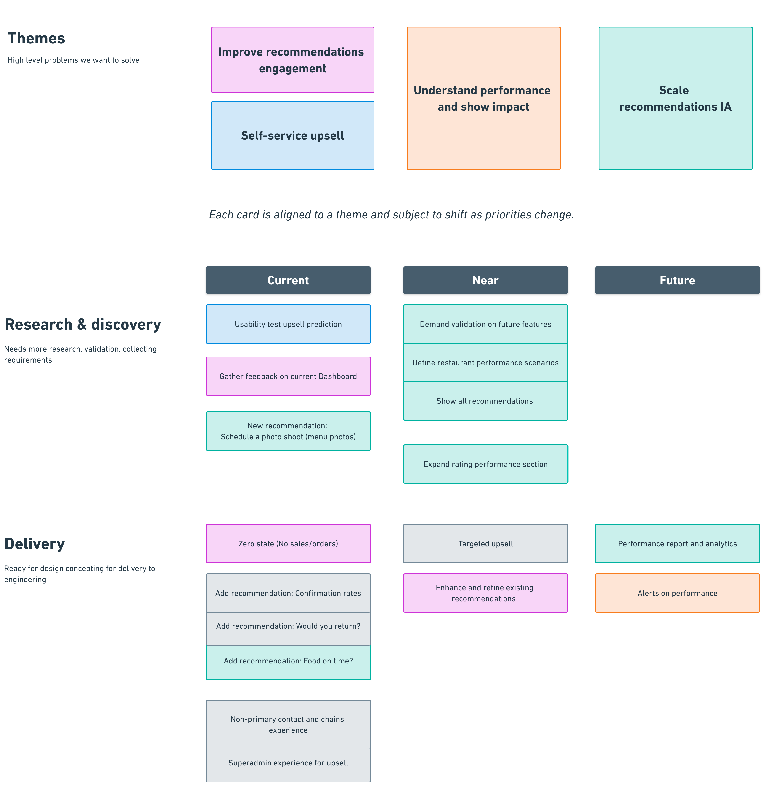
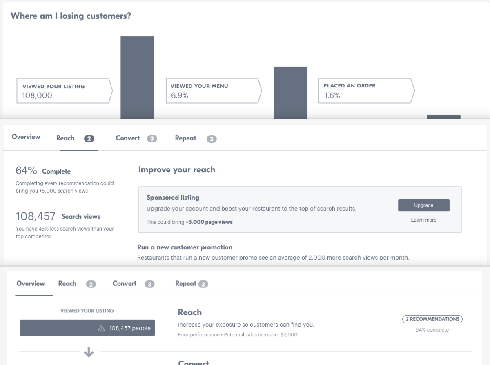
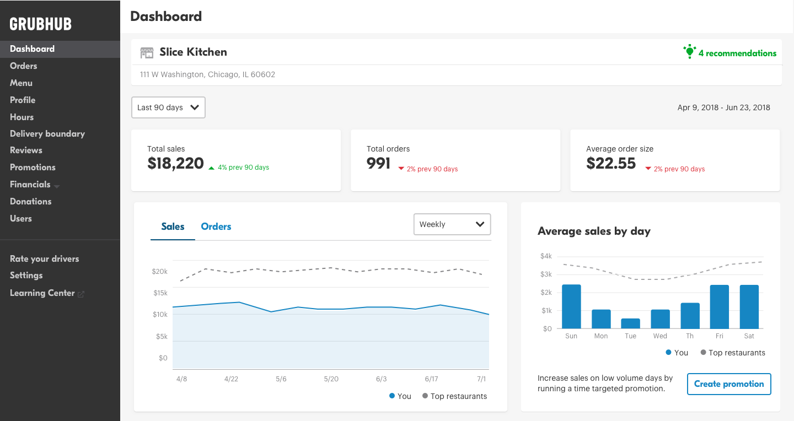
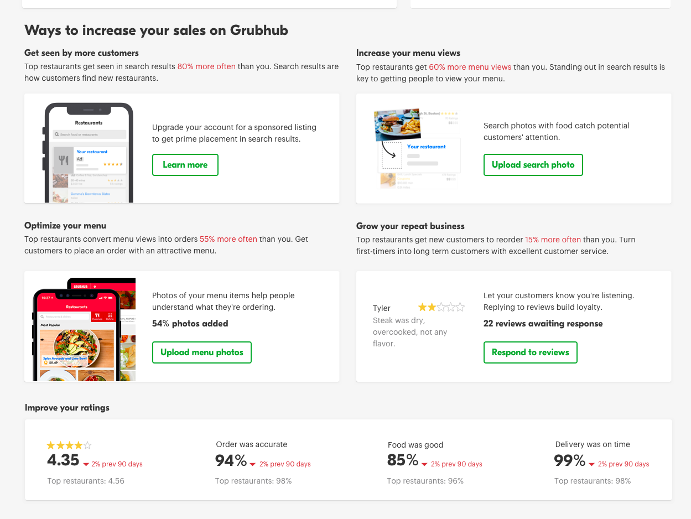
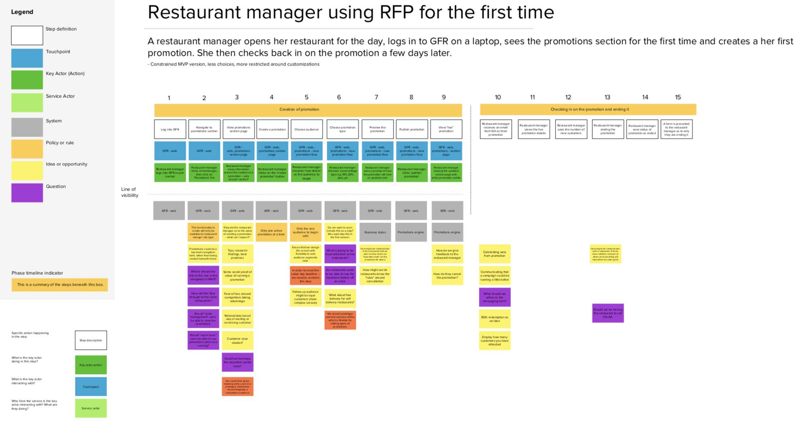
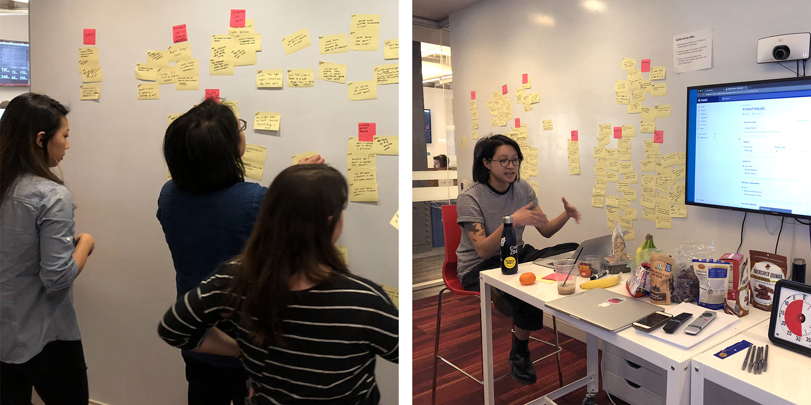
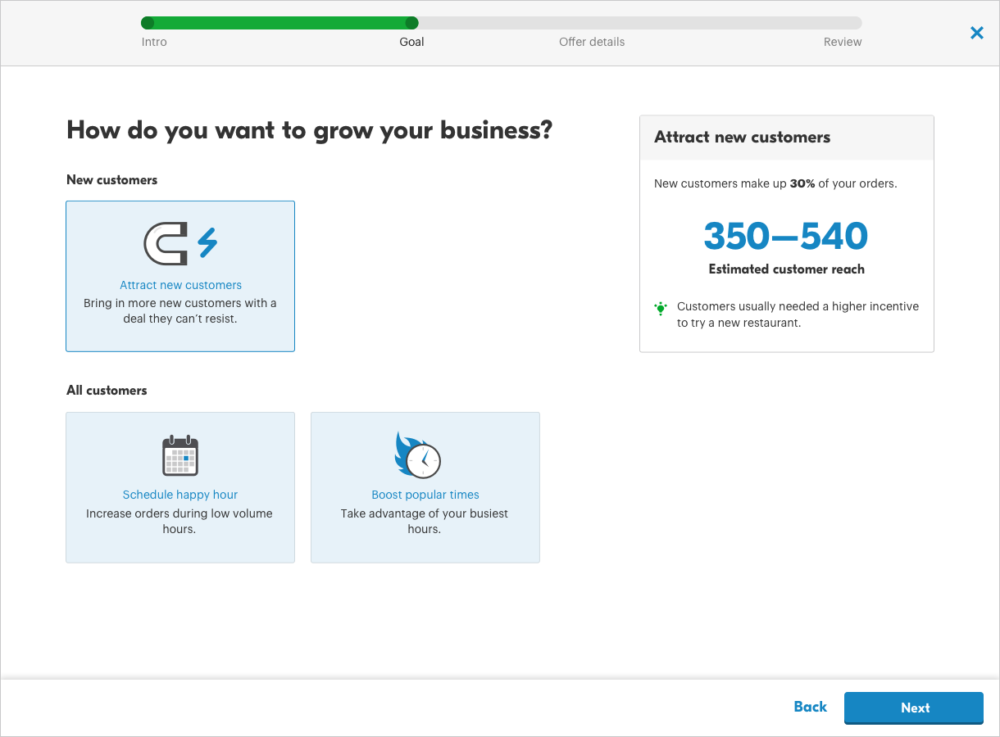
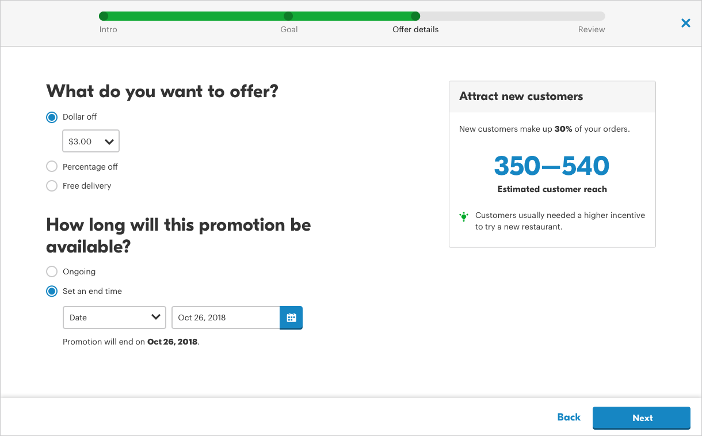

Recent work
Building tools that enable restaurants to take orders and manage their business
Here are a few examples of my recent work at Grubhub. Shoot me an email for more project details or insight into my process.

Here are a few examples of my recent work at Grubhub. Shoot me an email for more project details or insight into my process.
As the largest platform for food delivery in the United States, Grubhub has tons of data on what makes a restaurant successful. Our goal was to take complex data and transform them into easy-to-understand, actionable insights so that restaurants can improve their performance. I owned the dashboard features end to end, including defining the product vision to align stakeholders, conduct user testing, mapping user flows, creating prototypes, and working with engineers on implementation.
Design roadmapping
Early concepts
 
Restaurants don’t just vary across cuisine, they also vary widely across business goals. Targeted promotions give restaurants the ability to launch promotion campaigns customized to their specific goals, such as gaining new diners or increasing orders during low volume hours. I led design across product lifecycle stages, from launching the MVP to creating a scalable design framework as we released more ways to target diners.
Service blueprinting future state
Design sprint workshop with project stakeholders
 